Terra Incognita
An exploration and trade game for the Apple IIgs
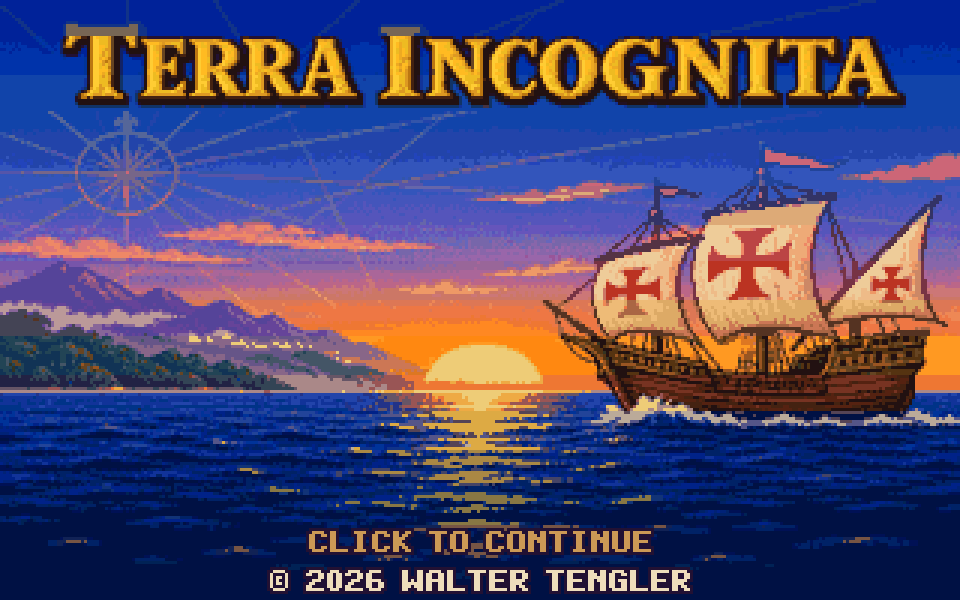
It is 1495. The King of Portugal gives you a caravel, a purse of cruzados and one order: sail west.
Beyond the ocean sea lies a continent no chart has shown — a different one in every game, hidden under the fog until your lookouts see it. Land your men, meet its peoples, trade, found trading posts, look for the golden cities, and bring gold and charts home to Lisboa. Rise from Escudeiro to Vice-Rei before the age of discovery ends.
The Voyage
What a captain of the King must reckon with.
Lisboa
Fit out your fleet in the yards: caravels, men, food and trade goods. The King grants you more the higher you rise.
The Wind
Sail with the wind behind you or crawl into it. The westerlies blow in the north, the trade winds in the south — as they did for the real navigators.
The Fog
The map starts black. What your lookouts see is charted for good, and every new league is paid for by the King's cartographers.
Ashore
Land your men and march: forests, hills, jungle and swamps slow you, mountains most of all. Every man eats a ration a day.
The Peoples
Trade goods for gold or food, give gifts, found a feitoria — or attack. Word of your deeds travels from village to village.
Perils
Storms spoil food and sink caravels. Too long at sea brings scurvy, and hostile peoples ambush you on their land.
Golden Cities
Rumoured, far inland, rich beyond measure — and well defended.
The Audience
Home again, the King takes his fifth, pays for your charts and your feitorias' gold, and promotes the bold.
Fame
From Escudeiro to Cavaleiro, Fidalgo, Capitão, Capitão-Mor, Almirante, Governador and Vice-Rei. The game ends in 1550.
A New World each game
Eight continents on the disk, drawn by the game's own tools; one is chosen when you set out.
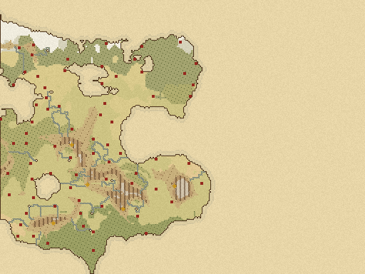
MARE OCEANUM- Coasts, bays and islands, mountain ranges along their ridges, rivers wandering down to the sea, lakes.
- Forest and prairie, pine woods in the north, jungle in the south, deserts, swamps, tundra and snow.
- Six peoples with names and ways of their own: round huts, tents of hides, houses of sun-dried brick.
- About seventy-five villages, and four or five golden cities hidden deep inland.
- Rivers deep enough for your caravels to sail up.
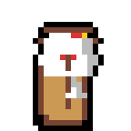
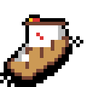
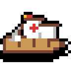
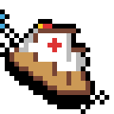
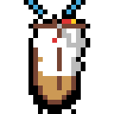
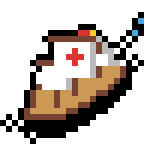

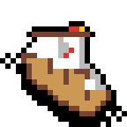
The Plates
Screens from an Apple IIgs (in the MAME emulator). Click one to see it large.
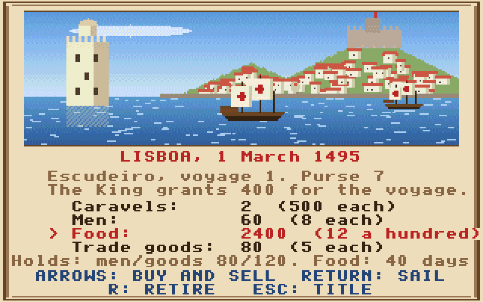
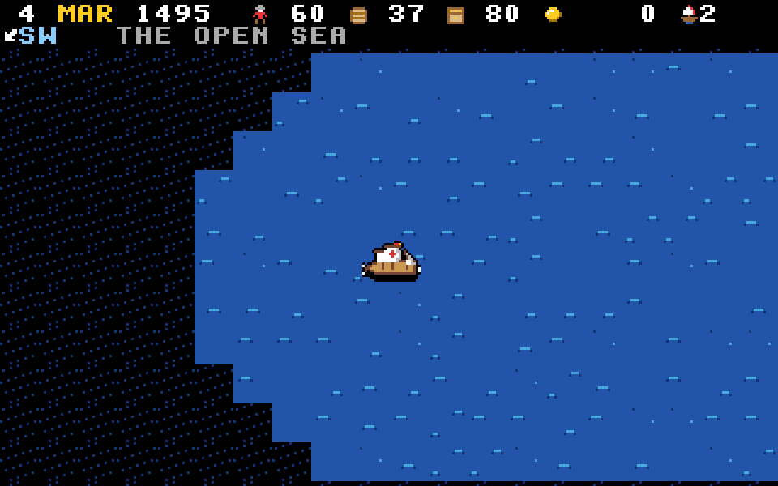

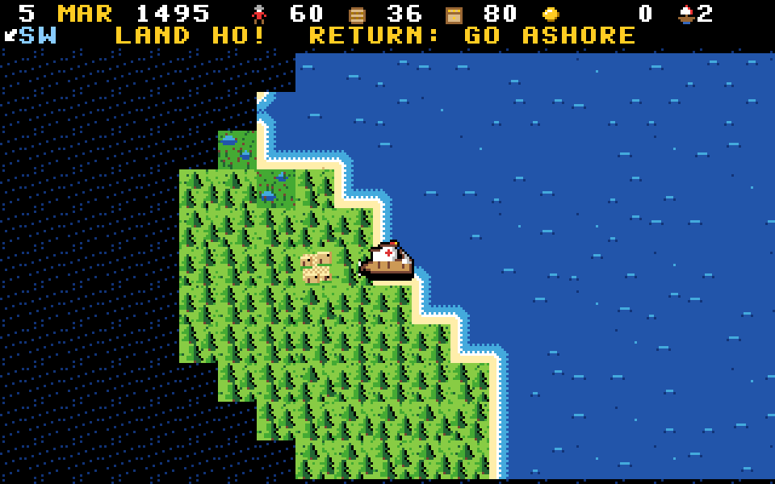
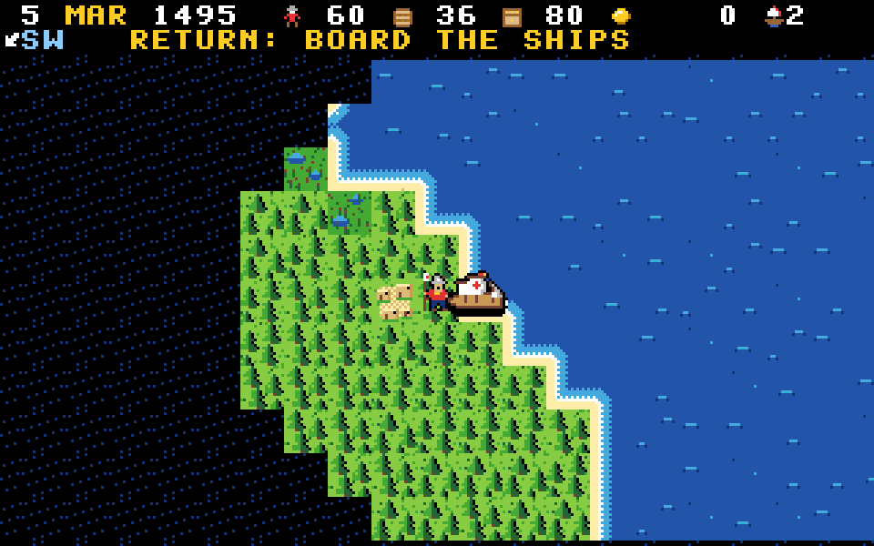
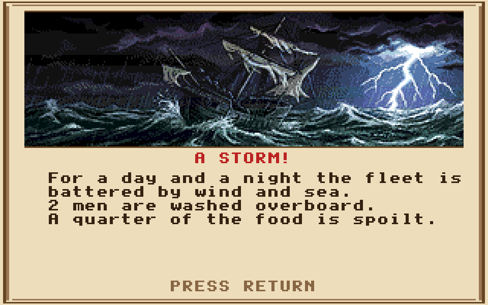
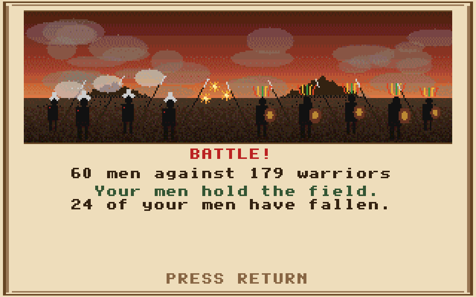
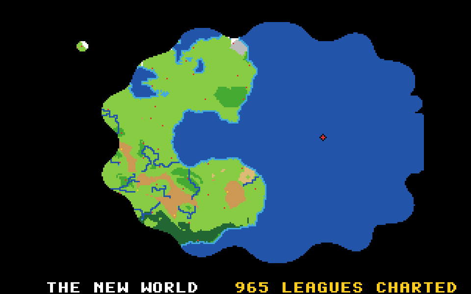

The Peoples
Walk into a village to trade, give gifts, found a trading post — or make war.
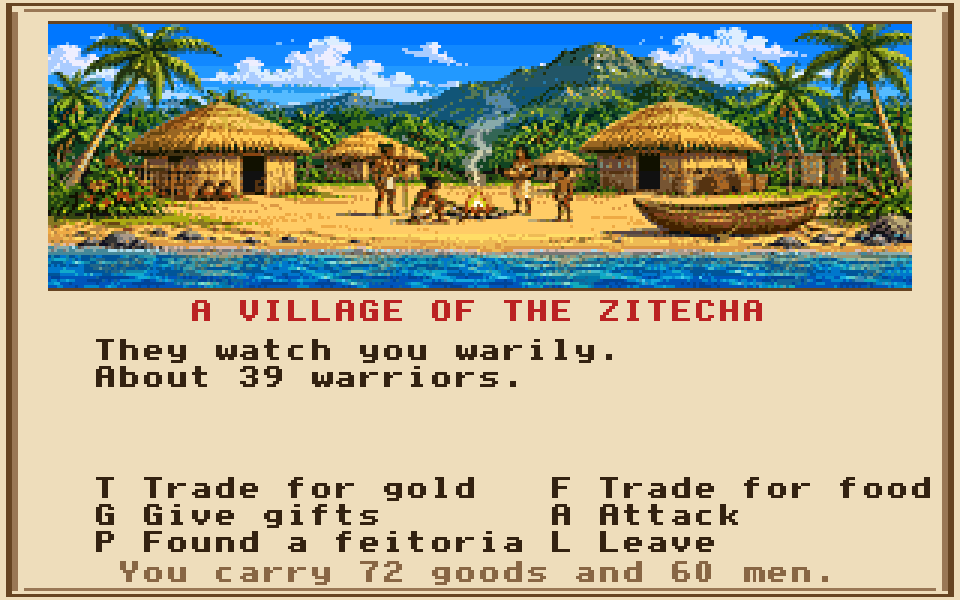
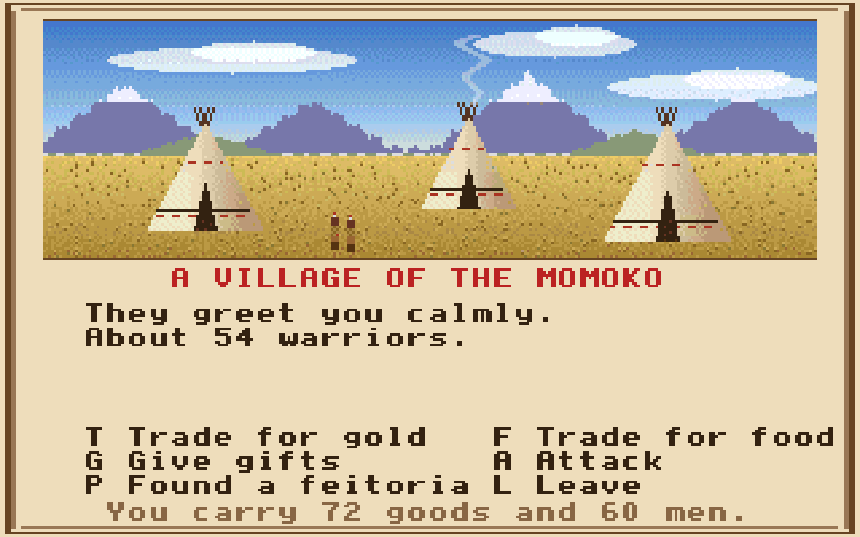
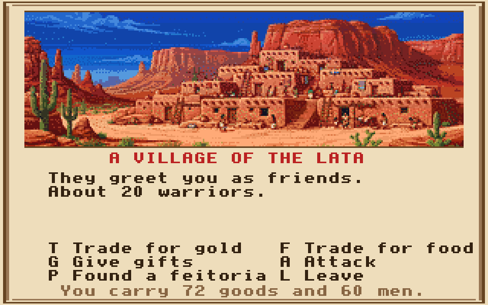

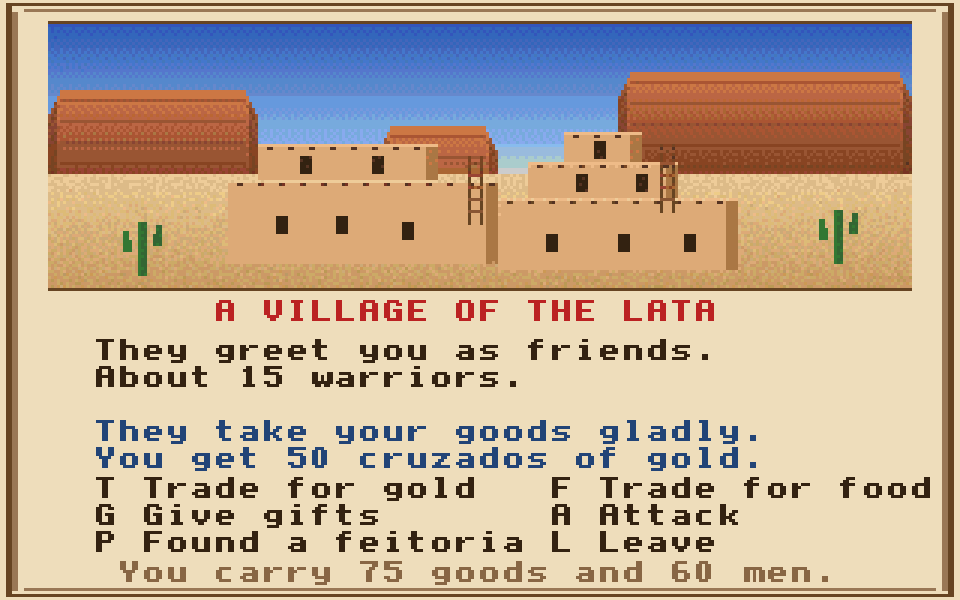
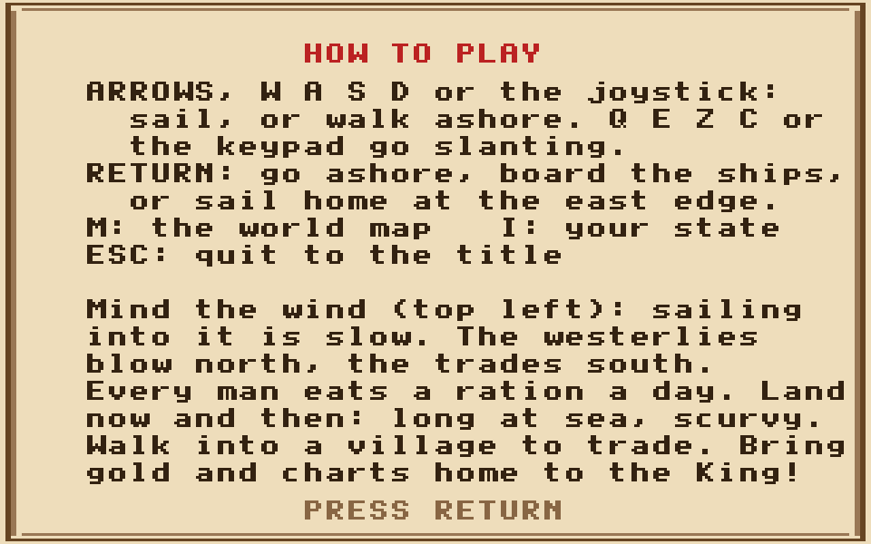
The Music
Written for the game in the manner of the age of discovery.
Six tunes and eleven sound effects — surf, thunder, drums, coins, a fanfare, a gull — all synthesized by the game's own Python tools and played by the Ensoniq chip. Nothing is sampled.
The Box
As it would have stood on the shelf.
A picture of a box: the game is still in development.
How it is Made
65816 assembly
Written for Merlin 32: the map and its fog, sailing and walking, the peoples, the pages, the yards and the audience. The game boots from one 800K ProDOS disk.
Super Hi-Res
16 × 16 tiles drawn into a hidden buffer and copied to the screen in one go, so nothing flickers. 109 tiles: the shores in 47 shapes, rivers that curve, a caravel in eight headings.
Worlds from noise
The continents come from integer-only value noise, ridges and steepest-descent rivers, written so the generator can one day run on the IIgs itself.
Painted by program
The tiles, sprites and every scene are drawn by Python tools and fitted to the IIgs's 16 colours a line, 16 palettes a screen. The title is a painting brought down to Super Hi-Res.
The Ensoniq
The tunes and the sound effects are synthesized in Python and laid out in the chip's 64K of sound memory; the music player is Grand Theft Apple's.
Played in MAME
Test scripts play the game in the emulator through its keys — to Lisboa, across the sea, into a village and home — and check its numbers and its sounds.
The Keys
- Arrows, W A S D, joystick
- sail, or walk ashore (Q E Z C and the keypad slant)
- Mouse
- hold the button to steer toward the pointer; click the ship, the captain or the message line to act; click the choices on every page
- Return
- go ashore, board the ships, sail home at the east edge
- M
- the world map
- I
- the expedition: men, food, goods, gold, charts, rank
- H
- how to play
- In a village
- T trade for gold, F for food, G gifts, A attack, P found a feitoria, L leave